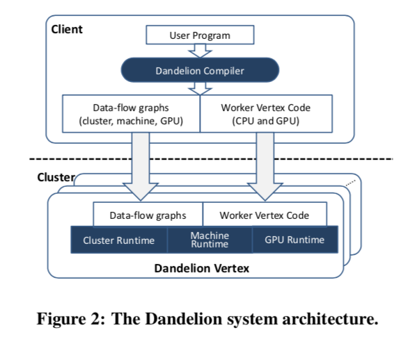
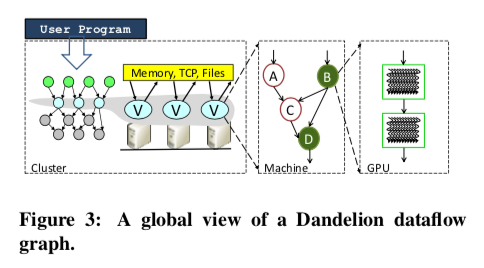

"Dandelion: a Compiler and Runtime for Heterogeneous Systems"
Problem
How to design a system that provides programmability for heterogeneous distributed systems?
-
Challenges are
- Heterogeneous: different programming models, architecture expertise
- Distributed resources: data movement, scheduling
- Concurrency: synchronization, consistency
System Design
Overview
-
Goals: make it simple for programmers to write high performance applications for hetergeneous system on a small cluster with GPUs and leverage its available resources
- Single programming interface for clusters with CPUs, GPUs, FPGAs, etc
- "Single machine" programming model: programmer writes sequential code
-
Runtime: take sequential program and do the following whenever possible
- Parallize computation
- Partition data
- Runs on all available resources
- Maps computation to best architecture
-
Workflow
- Given User program & partitioned data files as input
- Compile to a mix of CPU and GPU code and run on the cluster (Dandelion role)
- Output result as partitioned data files
-
Challenges
- Simple programming model
- Integerate multiple runtime efficiently to enable high performance
-
Dandelion innovation by levels
-
Programming languages
- Adopt language integration approach (LINQ): extends with Dandelion specific operators
- Constraints: UDF must be side-effect free; execute .NET function with dynamic memory allocation on CPUs only
-
Compilers
- Automatically compiles a data-parallel program to run on distributed heterogeneous systems
- Translation of .NET byte-code to multiple backends (e.g., GPU, FPGA)
-
Distributed and parallel runtime
- Treat hetergeneous system as the composition of a collection dataflow engines
- Three dataflow engines: cluster, mult-core CPU, and GPU (e.g., use PTask)
-
Architecture

-
Two main components
- Dandelion compiler generates the execution plans and the worker code to be run on the CPUs and GPUs of cluster machines
- Dandelion runtime uses the execution plans to manage the computation on the cluster (e.g., scheduling, distribution)
Dandelion Compilers
-
Dandelion compiler generates CUDA code, and three levels of dataflow graphs to orchestrate the execution
-
Relies on a library of generic primitives (GPU primitive library) to construct execution plans
-
GPU primitive library: for GPU dataflow graph
- primitives include low level building blocks (e.g., parallel scan and hash tables), high-level primitives for relational operators (e.g., groupby and join)
-
-
Compiling C# to GPU code
-
Translation performed at .NET byte-code level
- Map C# types to CUDA structs
- Translate C# methods into CUDA kernel functions
- Generate C# code for CPU-GPU serialization/transfer
-
Main constraint: dynamic memory allocation
- Convert to stack allocation if object size can be inferred
- Fail parallelization, fallback to host otherwise
-
Use Common Compiler Infrastructure (CGI) framework for the intermediate AST
-
Dandelion Runtime

-
Dataflow graphs
- Vertex: a fragment of the computation
- Edge: communication channels
-
Three levels:
- cluster level (what machine to compute what): cluster execution engine assigns vertices to available machines and distributes code and graphs, orchestrating the computation
- machine level (how the computation is done on each machine): executes its own dataflow graph, managing input/output and execution threads
- GPU level (use PTask as GPU dataflow engine)
-
Three dataflow graphs (shown above) form the Dandelion runtime, and the composition of those graphs forms the global dataflow graph for the entire computation
-
Cluster dataflow engine ("Moxie")
- Allows the entire computation to stay in memory when the aggregate cluster memory is sufficient (assume work on a small cluster with powerful machines with GPUs)
- Holds intermediate data in memory and can checkpoint them to disk (like Spark)
- Aggressively caches in-memory datasets (including intermediate data)
- Uses async. checkpoints to support coarse-grained fault tolerance
-
Machine dataflow engine
- Vertex: a unit of computation can be executed on CPU or GPU
- For CPU: parallelize the computation on multi-core
- For GPU: dispatch computation to GPU dataflow engine
- Async channels are created to transfer data between the CPU and GPU memory spacs
-
GPU dataflow engine
-
Use PTask execution engine
- a token model dataflow system
- tasks: computation or nodes in the graph
- ports: inputs and outputs of the tasks
- Channels: connects ports
- datablocks: deseralized data into chunks that are moved through channels
- Computation are done by pushing and pulling datablocks to and from channels (Future)
- A task is ready for execution when all of its input ports have available datablocks and all of its output ports have capacity
-